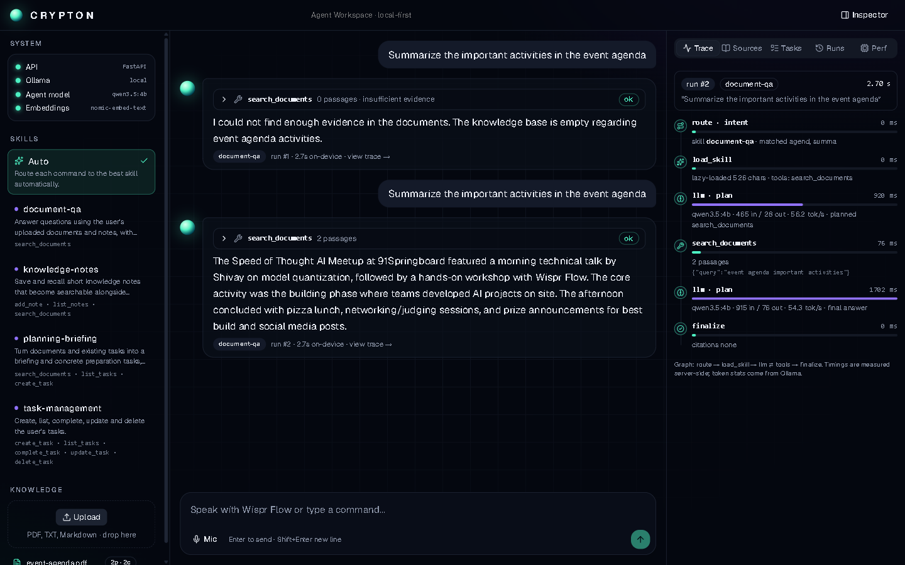
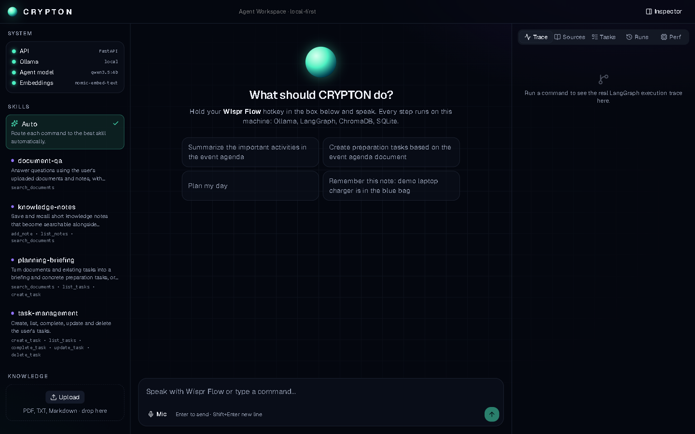

Crypton Lite
A private, local AI agent you control by voice: tasks, document Q&A with page-numbered citations, and live web research. Built for CRYPTON: Speed of Thought (WeMakeDevs, 31 Oct 2026).
Source on GitHub Submission write-upThis page is a static preview, not the running agent. The model (Ollama, qwen3.5:4b) and the database run on the presenter's laptop, so the interactive app is shown in the live demo or can be run locally with the steps below.
What it looks like


How the sponsor tools are used
| Tool | Role in the build | Status |
|---|---|---|
| Wispr Flow | Voice input. Wispr turns speech into text in the chat box; Enter starts the agent. | Ready; real-mic run pending |
| Anakin.io | web_search and scrape_url tools in the web-research skill. | Mocked tests pass; live run needs an API key |
| GenieX | Needs Snapdragon hardware; this build ran on Intel + NVIDIA. | Not verified |
Run it yourself
git clone https://github.com/Cod4Nitish/crypton-lite cd crypton-lite python -m venv .venv .venv\Scripts\pip install -r requirements.txt ollama pull qwen3.5:4b ollama pull nomic-embed-text .venv\Scripts\python -m uvicorn backend.main:app --port 8000
Then open http://localhost:8000. It can be installed as an app from the browser's install icon.